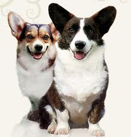

<table border="0" class="layout">
    <colgroup span="1"><col width="15%" span="1"></col><col width="25%" span="1"></col><col width="60%" span="1"></col></colgroup> 
    <tbody>
        <tr>
            <td valign="top">
                <div class="holster">
                    <div class="block_container s3 b-text b-static-text user_css_12816005438" id="e_127779588359"><span></span></div>
                </div>
            </td>
            <td>
                <div class="holster">
                    <div class="block_container s3 b-text b-static-text " id="e_128266423459">
                        <p style="text-align: center;"><span style="color: #006600;"><span style="color: #0000ff;"><strong>Вельш-корги</strong></span></span></p>
                        <p style="text-align: justify;"><span style="color: #006600;"><span style="color: #0000ff;"><strong>Из истории породы Вельш-корги, вельш корги пемброк, вельш корги кардиган :</strong> название этих собак, вероятно, происходит от уэльского слова corrci - "карликовая собака". Две их разновидности пембок и кардиган очень близки, но пемброк намного популярнее. Столетиями он был любимцем королевских особ - от Ричарда Львиное Сердце до Елизаветы II. Большинство экспертов считаю, что пемброк-вельш-корги появился в Уэльсе в 1107 году вместе с фламандскими ткачами. Одни связывают фламандское прошлое и лисью мордочку этих собак с предками-шпицами, другие же полагают, что торговля между Уэльсм и Швецией привела к скрещеванию островных псов со шведским вальхундом. И кардиган, и пемброк - отличные пастухи. Быстрые и ловкие вельш-корги хватают непослушных коров за "пятки", успевая проворно уворачиваться от копыт. В 1934 году пемброк и кардиган признаны в Британии самостоятельными породами.</span></span></p>
                        <p style="text-align: justify;"><span style="color: #006600;"><span style="color: #0000ff;"><strong>Общая характеристика:</strong> вельш-корги - это крепкая, неутомимая собака, привязчивые, дружелюбные, преданные, очень хорошо ладят с детьми, однако недоверчивы к посторонним, поэтому из них получаются отличные сторожа. Со времён свой пастушьей работы пемброк сохранил склонность кусаться, поэтому собак, живущих в доме, надо отучать от этого с щенячьего возраста. </span></span></p>
                        <p style="text-align: justify;"><span style="color: #006600;"><span style="color: #0000ff;"><strong>Содержание и уход:</strong> хотя по своему назначению это рабочая собака, пемброк вполне удовлетворится ролью домашнего питомца, довольствуясь регулярными прогулками средней дальности. Но учтите, если вы не обеспечите собаке достаточный выгул, она рискует быстро испортить фигуру. Необходимо каждый день чистить щёткой, шерсть этих собак не намокает. </span></span></p>
                        <p style="text-align: justify;"><span style="color: #006600;"><span style="color: #0000ff;"><strong>Размеры:</strong> рост 25-30 см. Вес 8-10 кг.</span></span></p>
                        <p style="text-align: justify;"><span style="color: #006600;"><span style="color: #0000ff;">________________________________________________</span></span></p>
                        <p style="text-align: justify;"> </p>
                    </div>
                </div>
            </td>
        </tr>
    </tbody>
</table>​
